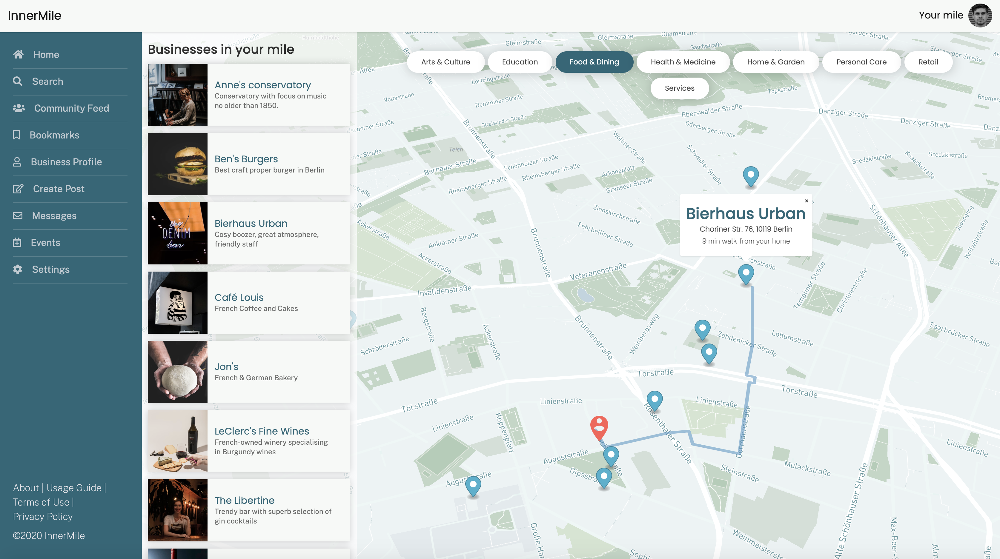
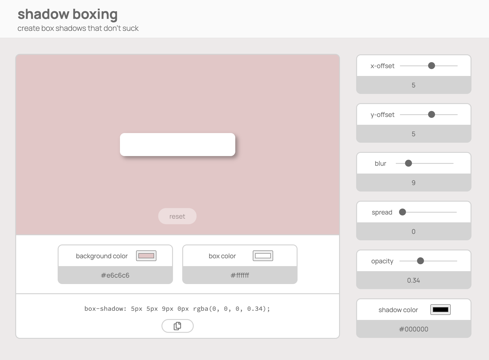
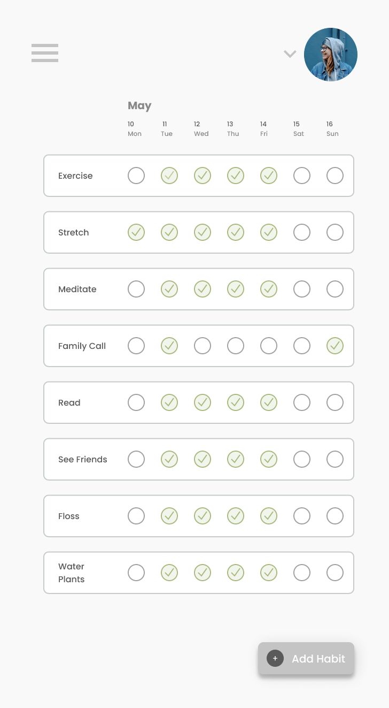

BEN GORDON
ABOUT
Who
What
Where
When
How
Why
I am Ben Gordon. I am an aspiring Frontend Web Developer and UX/UI Designer
I do frontend web development and UX/UI Design
I am based in Berlin, Germany, but available for remote work
Completed Web Development Bootcamp in December 2020
The tools I use are mainly HTML, CSS, JS and Figma
Frontend Development and UX/UI design provide an opportunity to improve the lives of our products' users through empathetic, immersive, and intuitive experiences
PROJECTS

InnerMile
< Back to projects
Problem
Process
Solution
People have difficulty finding great local shops within walking distance from their homes. Therefore, they often end up buying from large corporations.
We looked at the exisiting methods available for people to discover new shops and found that an intimacy and connection was missing from those experiences
We made the map the main component of the website, with additions such as an automatically planned walking route and estimated commute time to encourage users to actually get out of their houses and into the shops.
See the full project here >

Shadow Boxing
< Back to projects
Problem
Process
Solution
Box shadows can be a great tool to add dimension to your UI, but the CSS box-shadow property is not intutive. Developers learning to use box shadow often have a difficult time learning how to use the property because they don’t have a playground to try things out.
I examined the existing box-shadow generators to see what worked and what didn't. I found that they were ugly, not simple or inutitive to use, and don't allow you to customize the colors, which is a crucial aspect of box-shadows' efficacy
I decided to use a dull grey color palatte in order to not distract from whatever design color palatte the user has in mind.
See the full project here >

Habit App
< Back to projects
Problem
Process
Solution
I needed a simple app to track my habits. The existing ones try to do too much, and ironically make it harder for me to stick with my habits
Exisiting Habit apps try to do too much. So I distilled the exisiting platforms to their essentials and created an experience that is fun to use and does what it is supposed to do: Help you stick to your habits.
A streamlined, mobile-first design that removes all distractions and encourages the user to stick to their habits through clear visuals that convey only the most important information.
CONTACT
⚠️ Please note that this website is not yet complete!
If you are viewing this on a phone, I apologize, and please come back in a few days for a mobile-optimized experience.
If you are viewing this on a phone, I apologize, and please come back in a few days for a mobile-optimized experience.